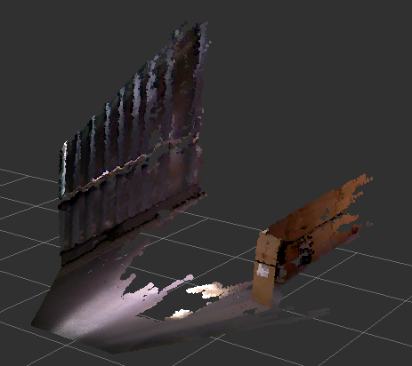
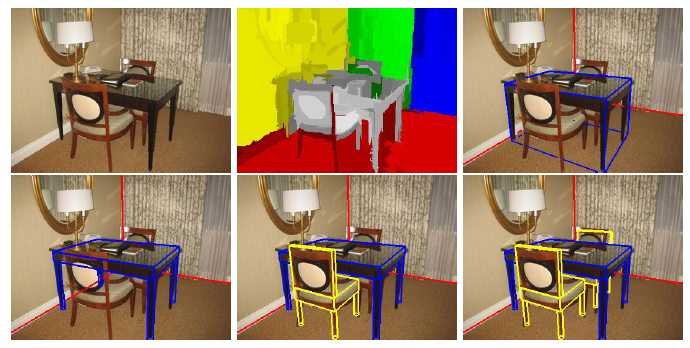
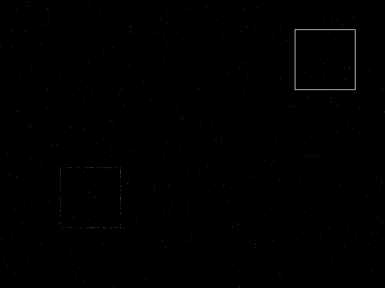
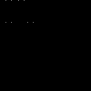
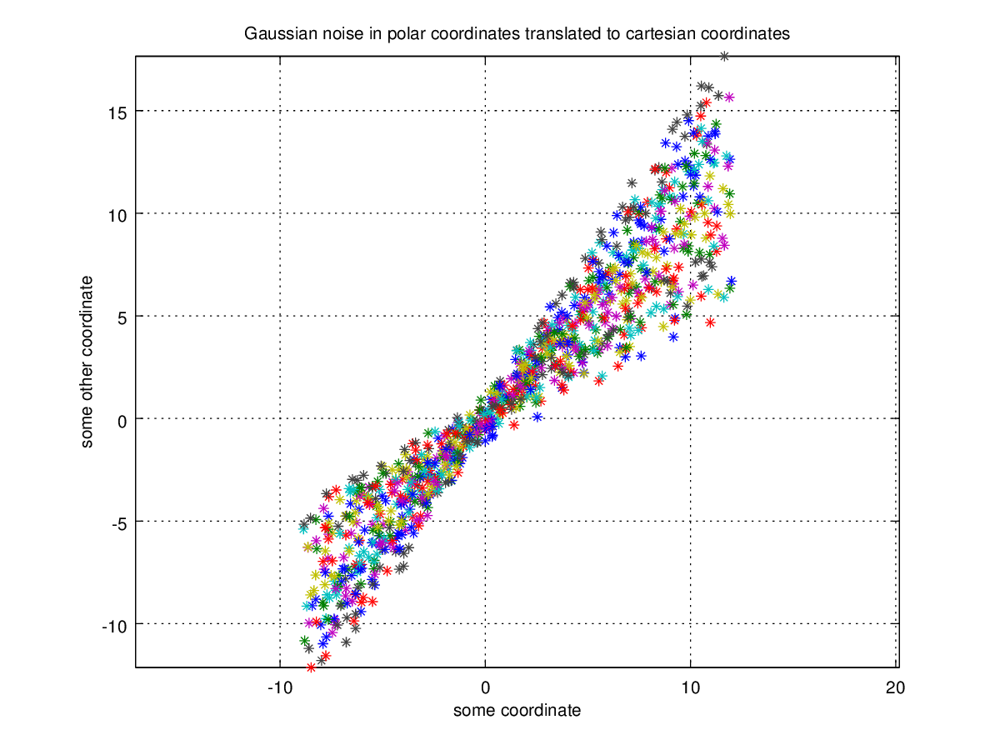
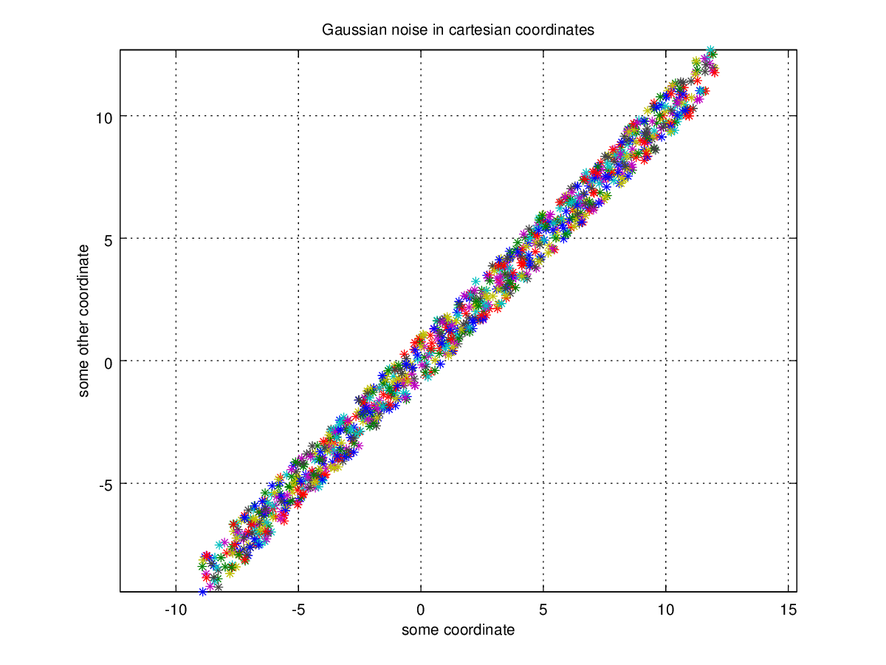
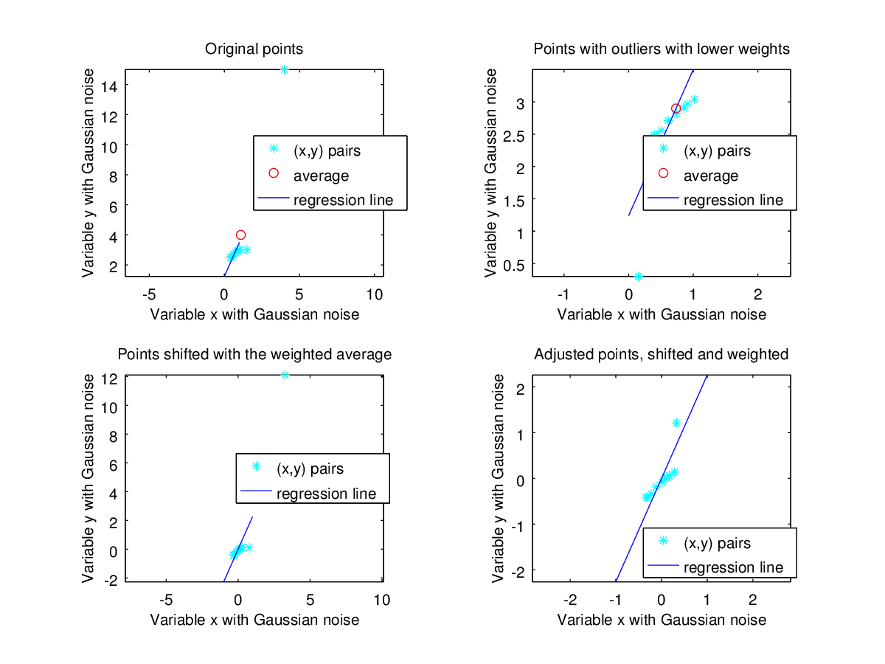

class: center, middle, inverse # Are nonparametric Bayesian methods ready for point clouds? Anne van Rossum .footnote[PhD candidate at Leiden, robotic startup [dobots.nl](https://dobots.nl)] --- # Robotics * A bit on point cloud * Regression in computer vision * Can nonparametric Bayesian methods perform hard assignments? * Can nonparametric Bayesian methods aid robustness? --- # Point cloud <p align="center"></img></p> Figure: Point cloud from a depth camera (Kinect-like), overlaid with colors from an RGB camera. --- # Movie <center> <video width="640" height="480" controls="controls"> <!-- <source src="movies/demo_around_people.mp4" type="video/mp4" /> --> <source src="movies/bart.mp4" type="video/mp4" /> <!-- <track src="subtitles_en.vtt" kind="subtitles" srclang="en" label="English"> --> Nav doesn't support html5 video </video> </center> --- # What we want <p align="center"></img></p> Figure: Bayesian scene understandig (Del Pero et al. 2013) Types of scenes considered are supermarkets; aisles in regular patterns. We want to perform inference on objects starting from points in a 3D point cloud. Occam's razor: no RANSAC, no Hough, no dirty tricks! --- # Least Squares - Ordinary vs Total In **ordinary** least squares, we minimize the residuals $\mathbf{r_x}$ in the $y$-direction: .pull-left[ $$S=\mathbf{r}^T \mathbf{W} \mathbf{r}$$ If we expect errors in both variables, we can perform **total** least squares optimization: $$S=\mathbf{r}_x^T \mathbf{M}_x^{-1} \mathbf{r}_x + \mathbf{r}_y^T \mathbf{M}_y^{-1} \mathbf{r}_y$$ ] .pull-right[  ] <p/> <p/> In computer vision we need **total least squares**. For line or plane extraction the $y$-coordinate does have the same role as the $x$-coordinate. --- # Space - Polar vs Cartesian Coordinates The Randomized Hough Transform (RHT) to extract lines from an image. .pull-left[ <p align="center"></img></p> ] .pull-right[ <p align="right"></img></p> ] <p/> Figure: *Left*: input. *Right*: the Hough accumulator (polar coordinates) <p/> Due to the fact that the Hough Transforms operates in polar coordinates, its complexity is (without adjustments) in the order of **pairs** of points. Other problems? Yes, there are many parameters: grid granularity, picking neighbourhood size for pairs, threshold levels, etc. --- # Noise - Polar vs Cartesian Coordinates .pull-left[ <p align="center"></img></p> ] .pull-right[ <p align="right"></img></p> ] A Gaussian distribution for noise in polar coordinates is just not the same as the to-be-expected noise from the true structure. --- # Robustness An example with inlier point weights `$w_{in}=1.0$`, and a single outlier with weight `$w_{out}=0.1$`: <p align="center"></img></p> The outlier has a disastrous effect! --- # A crisp mixture model A mixture model: $$f(x)=\sum_{i=1}^n w_i p_i(x) \text{ with for example } p_i=\mathcal{N}(x|\mu_i,\Sigma_i)$$ **Problem!** Giving even a small weight $w_j$ to other clusters $j \ne i$ for our points, will screw up our (not yet robust) estimation step This property of soft assignments to clusters (every point belongs to each cluster for a bit) we want to replace by hard assignments. Soft assignments are used for "border-case" points. In computer vision a plane is in front of another plane, there is no need to assign a point to multiple planes simultaneously. **Question:**.red[*] Can nonparametric Bayesian methods help us out? We need a level of "indirection". First, assign points to lines/planes. Second, do the detailed line fitting. .footnote[.red.bold[*] If you see "question", it really means I have no answer] --- # A robust mixture model Student's t-distribution is well known for accomodating outliers due to its fat tail: $$f(t) = \frac{1}{\sqrt{\tau}B(\frac{1}{2},\frac{\tau}{2})}\( 1 + \frac{t^2}{\tau} \)^{\frac{-\tau+1}{2}}$$ It is possible to use a mixture of t-distributions, but it is not really Bayesian. We do not even attempt to capture the distribution of noise. Example: Suppose we have no lines at all, only noise. We don't want a method that tries to fit lines anyway! --- # A robust mixture model We can use redescending M-estimators. They assign zero weight to gross outliers. **Question:** Is there a redescending M-estimator that has a proper probability distribution associated to it? --- # A robust mixture model Separate gross outliers from pseudo-outliers by a heterogeneous probability distribution mixture. And allow for a potential infinite number of structures: $$G \sim SomeP(\ldots, G_0)$$ $$\theta_i|G \stackrel{iid}{\sim} G \qquad for \quad i = 1,\ldots,N$$ $$x_i|\theta_i \stackrel{ind}{\sim} F_i(\theta_i) \qquad for \quad i = 1,\ldots,N$$ Here $F_i(.)$ is different, can be a uniform distribution for the noise, and a "robust" distribution for points on a line. The $\theta_i$ correspond to a line object. It is easy to imagine that the number of lines (or planes) might be modeled by some process, even a DP. **Question:** What is computationally feasible to have as $F_i(.)$? --- class: center, middle, inverse # Answers?